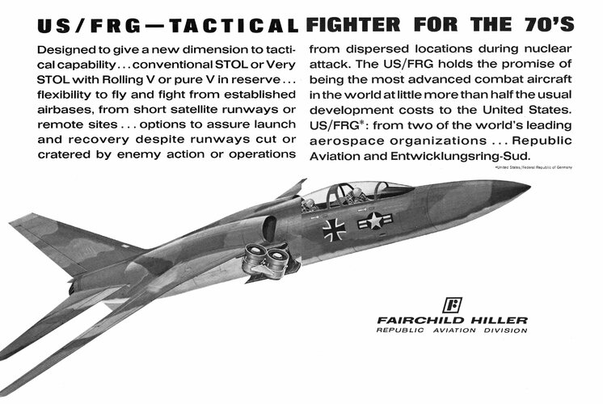
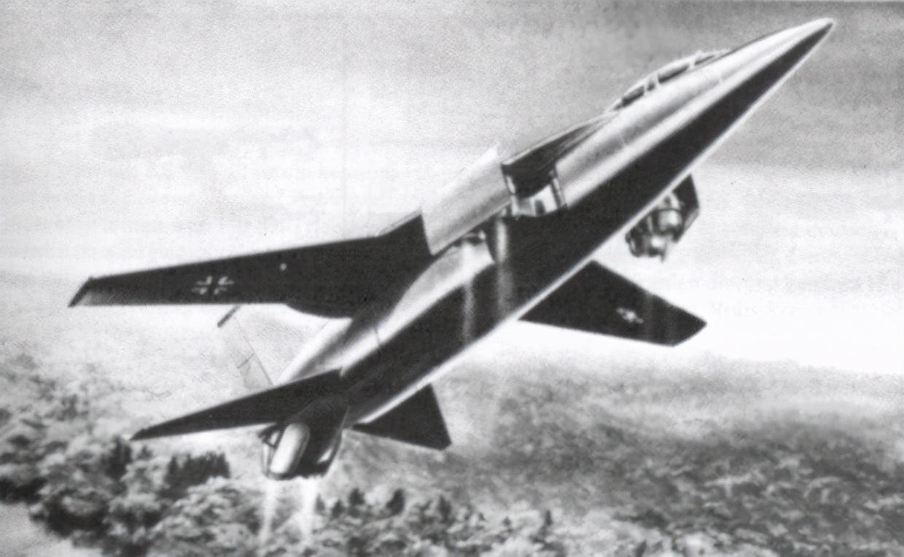

美国共和航空公司和西德EntwicklungsringSud股份有限公司组成合资企业， 研发具备短距/垂直起降能力的新型战斗/攻击机，以接替F-104战斗机。 该项目不得不与美国空军最大飞行速度M2.8的FX项目，以及美国海军的VFAX高级截击机项目争夺国防资金， 国防和工业部官员认为，只有一个能获得批准。 国防部国际安全事务办公室（I.S.A.）的智囊团还提出了“国际战斗机”，概念与US-FRG有重合
US-FRG战斗轰炸机已完成技术设计阶段，距离制造实机的阶段不远。 其采用上单翼，预计配备20毫米航炮，可挂载常规炸弹，翼尖可挂载空空导弹，携带10000-14000磅的载荷。 4个升力发动机两两并联，在停放和平飞状态收进机体内，在短距/垂直起降时伸出外面。得益于垂直起降能力， 可以灵活部署在战场附近， 在面积极小的空地或损毁的机场上起降，低空高速突防。
该机是串列双座布局，后座是投弹手和领航员。它的最大毛重是18.1吨-20.4吨，属于中型机， 在低空的最大飞行速度接近音速。 在海拔6096米的高度以下，该机的对空状态应该能和苏联现有的任何截击机匹敌，在这个高度以上则处于劣势， 因为该机的设计考虑了对地攻击而不是纯粹的空优。
非正式研究探讨了将该机转换成截击机的可能，可“临时”执行空军FX项目的任务， 这需要提高巡航发动机推力和操纵性。支持者认为该机可以填补下一代战斗机服役前过渡时期的空白
(上图展示了两种机型: 靠下的机型为填补"空白"的截击机, 靠上的机型为上文提到的对地攻击机)
Ps: 私以为在美苏冷战期间对地攻击机的方案最为靠谱。 因为苏联如果想"西伐"占领欧洲, 必会出动大量装甲部队和陆军,同时美苏都在大力发展核武器， 所以一个全地形全气候作战的垂直起降对地攻击机对北约极为重要 正经点！正经点！继续介绍：
(上图为Entwicklungsring Sud的方案)
我们可以看到, 分开的双矩形进气道位于机体背部后方，这是为了尽量减少主发动机吸入升力发动机喷出的热空气。
[有问题百度一下]